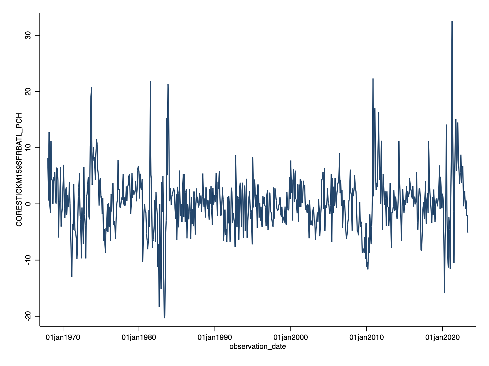
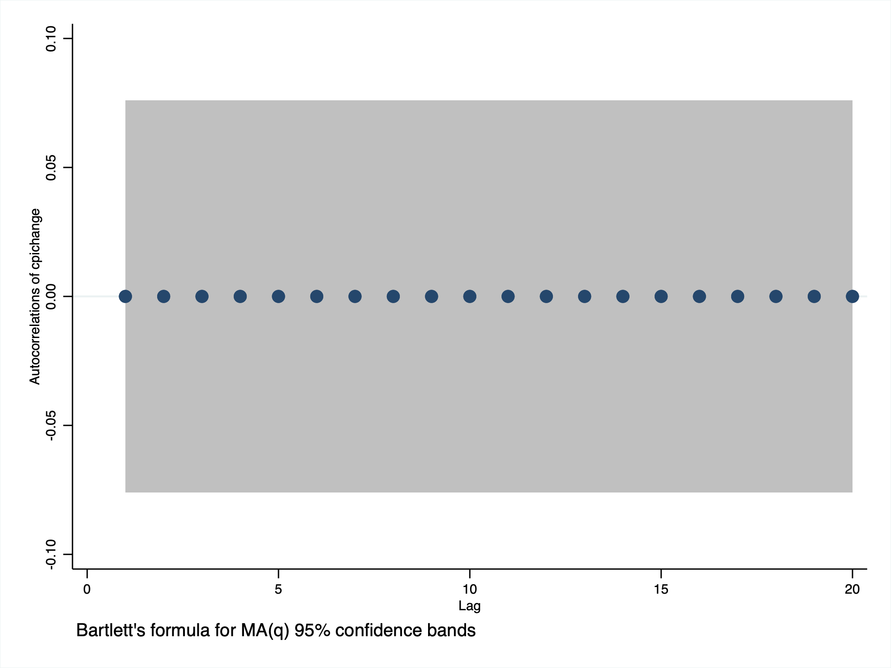
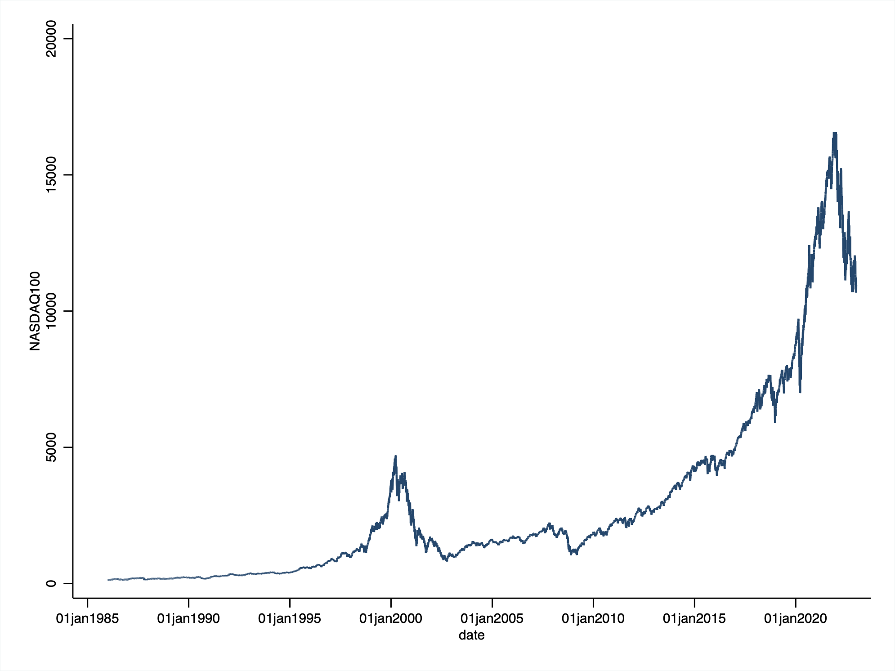

GDP, NASDAQ100
. import excel "/Users/simoneboschetti/Desktop/DATA/GDP.xls", sheet("FRED Graph") cellrange(A11:B316) firstrow clear
(2 vars, 305 obs)
. tsset observation_date
Time variable: observation_date, 01jan1947 to 01jan2023, but with gaps
Delta: 1 day
. summarize GDP
Variable | Obs Mean Std. dev. Min Max
-------------+---------------------------------------------------------
GDP | 305 6937.946 7101.128 243.164 26486.29
Serie stazionaria
 
. import excel "/Users/simoneboschetti/Desktop/DATA/NASDAQ100.xls", sheet("FRED Graph") cellrange(A11:B9663) firstrow clear
(2 vars, 9,652 obs)
. rename observation_date date
. label variable date "date"
. tsset date
Time variable: date, 02jan1986 to 30dec2022, but with gaps
Delta: 1 day
. summarize NASDAQ100
Variable | Obs Mean Std. dev. Min Max
-------------+---------------------------------------------------------
NASDAQ100 | 9,327 2871.658 3469.038 128.43 16573.34
Serie non stazionaria
